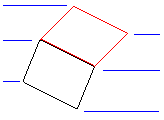

|
Add3DFace Method |
Creates a 3DFace object given four vertices.
Signature
RetVal = object.Add3DFace(Point1, Point2, Point3[, Point4])
Object
ModelSpace Collection, PaperSpace Collection, Block
The objects this method applies to.
Point1
Variant (three-element array of doubles); input-only
The 3D WCS coordinates specifying a point on the 3DFace object.
Point2
Variant (three-element array of doubles); input-only
The 3D WCS coordinates specifying a point on the 3DFace object.
Point3
Variant (three-element array of doubles); input-only
The 3D WCS coordinates specifying a point on the 3DFace object.
Point4
Variant (three-element array of doubles); input-only; optional
The 3D WCS coordinates specifying a point on the 3DFace object. If omitted, this point will default to the coordinates of Point3 in order to create a three-sided face.
RetVal
3DFace object
The newly created 3DFace object.
Remarks
To create a three-sided face, omit the last point. Use the SetInvisibleEdge method to set the visibility of an edge.
Points must be entered sequentially in either a clockwise or counterclockwise direction to create a 3DFace object. You can create multiple adjacent faces by specifying the first two points of an additional face exactly as the last two points of the previous face.
Point4 Point1, Point4 Point1 |
 |
Point3 Point3, Point2 Point2 |
| Comments? |